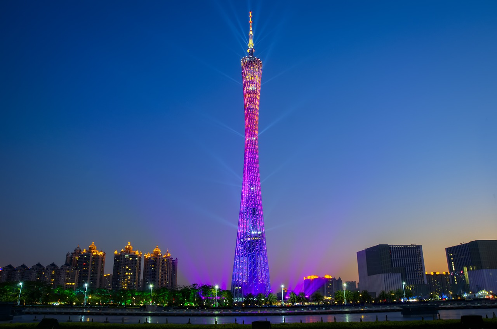
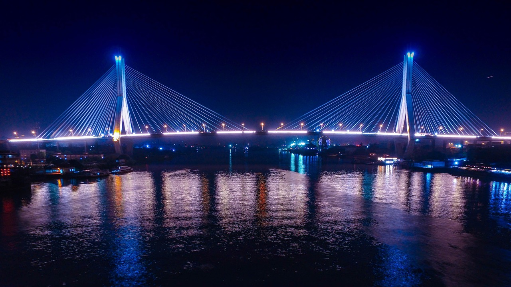
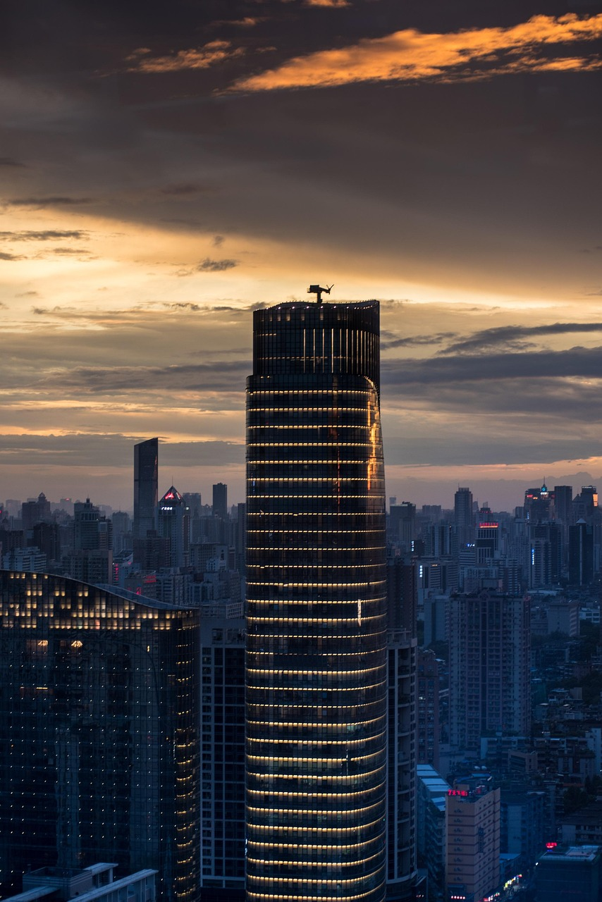

广州塔：
广州塔（昵称“小蛮腰”）矗立于广州市新中轴线与珠江交汇处，与珠江新城、海心沙岛隔江相望，总高度600米（主塔体454米+天线桅杆146米），是中国第一、世界第三高塔 。其标志性“纤纤细腰”造型由两个扭转135度的椭圆形钢外壳构成，塔身采用抗12级台风和7.8级地震的网格镂空结构，设计使用年限超百年
鹤洞大桥：
鹤洞大桥是连接广州市海珠区与荔湾区的重要跨江通道，横跨珠江后航道，全长2.3公里，主桥采用双塔双索面复合斜拉桥设计，桥面为双向六车道城市快速路，设计时速60公里/小时 。自1998年通车以来，日均车流量超13万辆，是荔湾芳村至海珠西部、广州至佛山南海的交通枢纽
广州东塔：
作为珠江新城CBD的“双子塔”之一，广州东塔（与西塔广州国际金融中心对望）高530米，共111层，是中国第四高楼、全球第七高楼。其棱形切割玻璃幕墙在黄昏霞光中折射出渐变光影，顶部设计灵感源自通透的“水晶”造型，与西塔“水润玉璧”形成“一刚一柔”的美学呼应。
